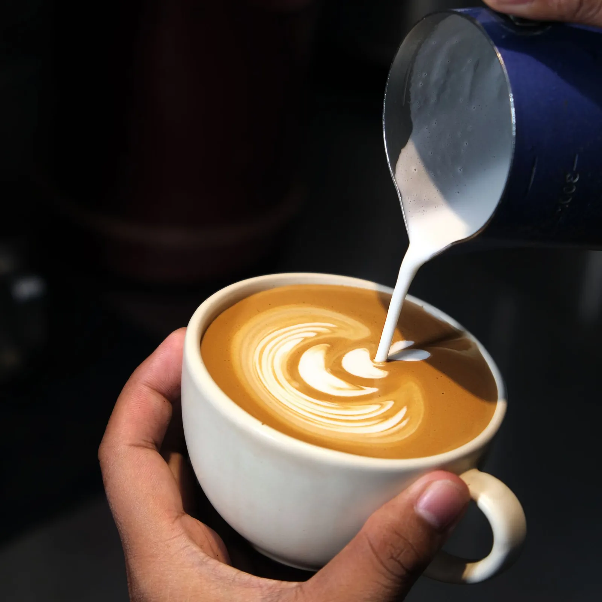
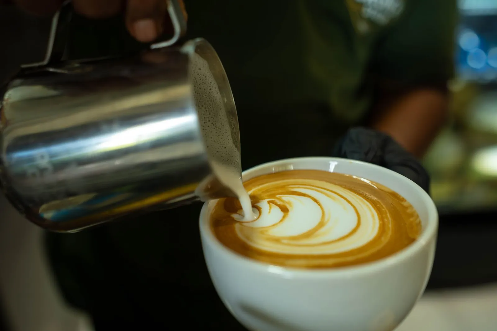
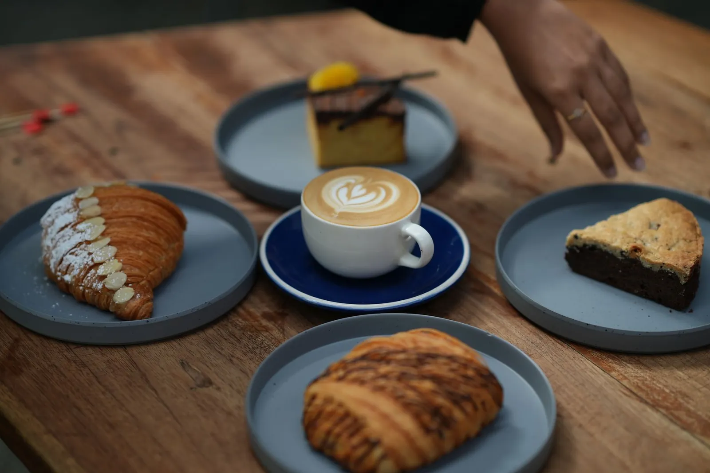
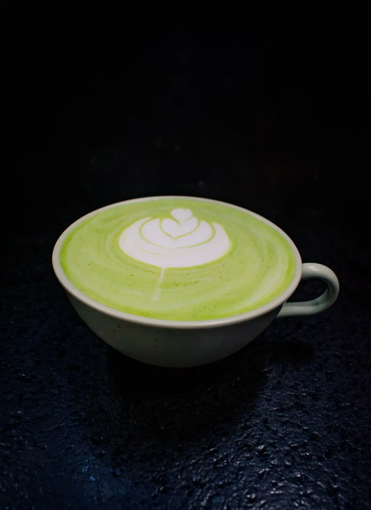
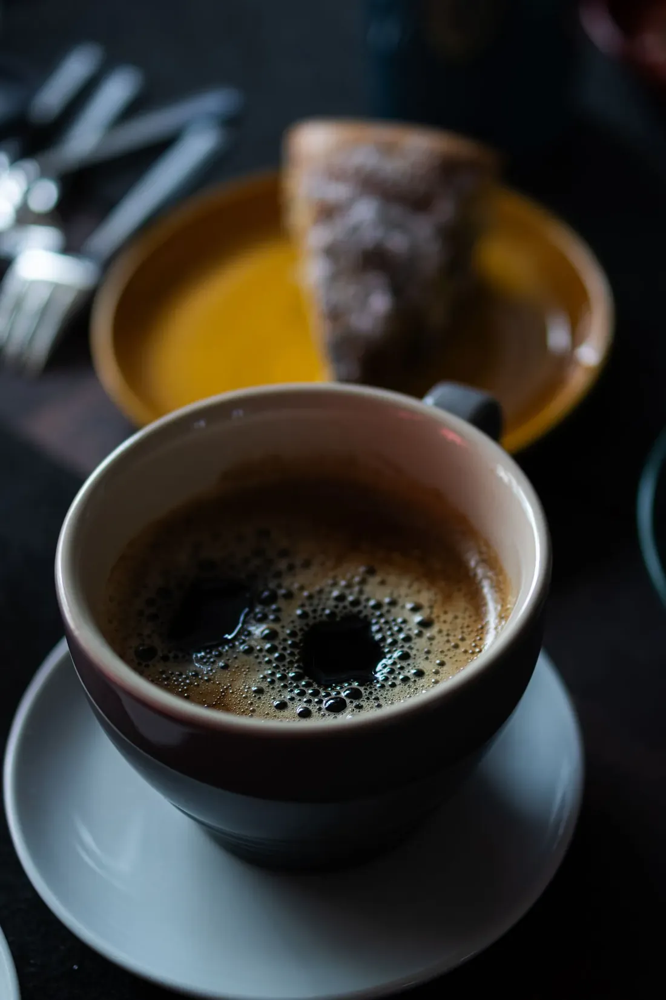
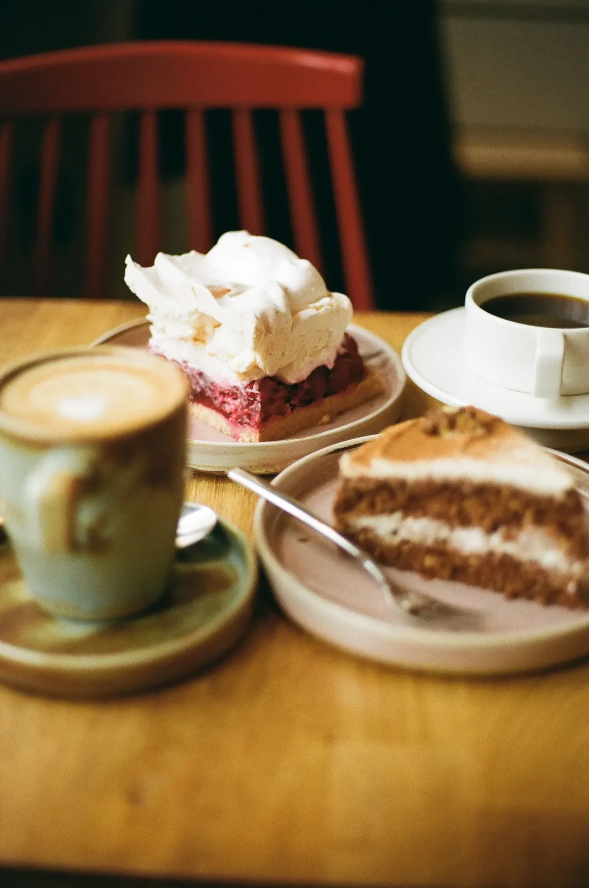

Wit
Cappuccino
Of een cortado, flat white of latte. Altijd met een tekening erop.

Achter de machine staat de First Barista of Belgium '25. En alles is standaard plantaardig, zonder meerprijs en zonder in te leveren op smaak.
Plantaardige melk in je cappuccino en vegan gebak in de vitrine 
Erkend door FETAM. Tot en met de tekening op je melkschuim.
KOP zit binnen in de zaak van Pastoor. Even shoppen, even zitten, of allebei.
Als de zon schijnt, zit je buiten in alle rust. Je hond is welkom.
Van een espresso tot een pour over die je samen met de barista kiest. Bestellen doe je gewoon aan de bar.

Of een cortado, flat white of latte. Altijd met een tekening erop.

Felgroen, romig en een vaste favoriet in de reviews.

Of een long black, batch brew of pour over. Puur en eerlijk.

Zoals de carrot cake. Vegan, en daar proef je niets van.

De snor zit in ons logo, op onze ramen en dus ook op je schoteltje. Een klein koekje, een grote glimlach.
Eerst kijken, dan dopen. Of meteen opeten, dat mag ook.
Volg @kopkoffiezaak"De specialty coffee place to be in Aalst! Dit is koffie op zijn best! Altijd super bereid en goed gesoigneerd. Het prettig gestoorde personeel maakt het helemaal af."
"Ik heb er geen ander woord voor: TOP! Spitsvondige barista met talent in een heerlijk interieur. Ook mijn Franse bulldog was hier welkom."
"Superlekkere matcha en koffietjes, vriendelijke bediening en heerlijke gebakjes. Echt een top adresje in Aalst."
Binnen in de zaak van Pastoor, met een terras achteraan. Hou de snor op het raam in de gaten.

Ik maakte deze demo voor jullie om te tonen wat er kan. Na een kort gesprek maak ik er iets veel persoonlijkers van, helemaal naar jullie wens.
Vrijblijvend. Ik kom langs of we bellen.
Op maat, op jullie eigen domein.
Geen voorschot. Jullie betalen pas als alles klaar is.
Hosting, domeinnaam en kleine wijzigingen, zoals nieuwe openingsuren.
Omdat een voorbeeld meer zegt dan een mail. Zo zien jullie meteen wat er kan, en het kost jullie niets.
Nee. Het gesprek is vrijblijvend. Vinden jullie het niks, dan is het daarmee gedaan.
Na ons gesprek staat jullie site binnen 10 tot 14 dagen online.
Zeker. Jullie domeinnaam kan gewoon blijven, de nieuwe site komt in de plaats van de oude.
Nee, dat doe ik op basis van ons gesprek. Eigen foto's zijn mooi meegenomen, maar niet nodig om te starten.